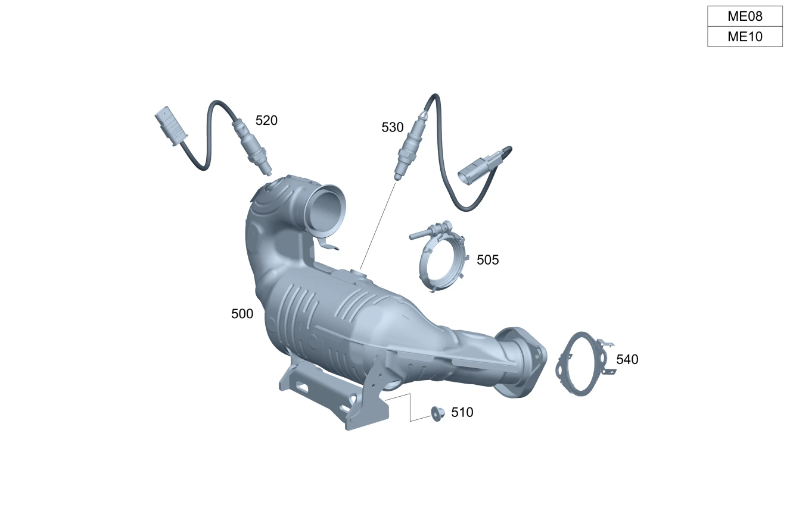

| № | Артикул | Название | Кол. | Примечание | Ограничение |
|---|---|---|---|---|---|
| 100 | A 177 492 04 00 | Многоканальное уплотнение | 1 | Трубопровод ОГ спереди к трубопроводу ОГ посередине | M260/M282 |
| 115 | A 000 990 68 03 | Винт Torx External | 2 | Передняя часть выпускной системы к средней части выпускной системы; M8X25 | M260/M282/M654 |
| 120 | A 247 492 40 00 | Держатель | 1 | Выпускная труба (передняя) | (M260/M282/M654) |
| 132 | A 000 541 01 40 | Держатель | 1 | Крепление провода датчика температуры; 18 X 24 MM | (M260/M282)+(598/961) |
| 132 | A 000 541 01 40 | Держатель | 1 | Крепление провода датчика температуры; 18 X 24 MM | (M260/M282)+(598/961/999) |
| 132 | A 000 541 04 00 | Держатель | 1 | Крепление провода датчика температуры | (M260/M282)+(598/961/999/4S7) |
| 132 | A 000 541 04 00 | Держатель | 1 | Крепление провода датчика температуры | (M260/M282)+(598/961/999)/M260+9U8+4S7 |
| 135 | A 177 159 21 00 | Держатель | 1 | Крепление датчика температуры | (M260/M282)+(598/961) |
| 140 | A 247 492 24 00 | Держатель | 1 | Датчик оксидов азота | M608/(M260/M282)+(598/961)/M654+971 |
| 142 | A 202 990 03 17 | Винт с шестигр. головкой | 2 | Датчик NOx к кронштейну; M6X19 | M608/(M260/M282)+(598/961)/M654+971 |
| 142 | A 202 990 03 17 | Винт с шестигр. головкой | 2 | Держатель к интегральной балке; M6X19 | M608/(M260/M282)+(598/961)/M654+971 |
| 142 | A 202 990 03 17 | Винт с шестигр. головкой | 2 | Держатель к интегральной балке; M6X19 | M608/(M260/M282)+(598/961/999/964)/M654+971 |
| 142 | A 202 990 03 17 | Винт с шестигр. головкой | 2 | Держатель к интегральной балке; M6X19 | (M260/M282)+(598/961/999/964)/M654+971 |
| 145 | A 247 490 04 02 | Держатель | 1 | Крепление держателя | (M260/M282)+(598/961) |
| 145 | A 247 490 04 02 | Держатель | 1 | Крепление держателя | (M260/M282)+(598/961/964/999) |
| 145 | A 247 490 04 02 | Держатель | 1 | Крепление держателя | (M260/M282)+(598/961/999/4S7) |
| 145 | A 247 490 04 02 | Держатель | 1 | Крепление держателя | (M260/M282)+4S7 |
| 145 | A 247 490 04 02 | Держатель | 1 | Крепление держателя | (M260/M282)+(598/961)+830 |
| 145 | A 247 490 04 02 | Держатель | 1 | Крепление держателя | (M260/M282)+(598/961/964/999)+830 |
| 145 | A 247 490 04 02 | Держатель | 1 | Крепление держателя | (M260/M282)+(598/961/999/4S7)+830 |
| 145 | A 247 490 04 02 | Держатель | 1 | Крепление держателя | (M260/M282)+4S7+830 |
| 150 | N 000000 003477 | Гайка | 1 | Держатель к остову кузова; M6 | (M260/M282)+(598/961) |
| 150 | N 000000 003477 | Гайка | 1 | Держатель к остову кузова; M6 | (M260/M282)+(598/961/964/999) |
| 150 | N 000000 003477 | Гайка | 1 | Держатель к остову кузова; M6 | (M260/M282)+(598/961/999/4S7) |
| 150 | N 000000 003477 | Гайка | 1 | Держатель к остову кузова; M6 | (M260/M282)+4S7 |
| 150 | N 000000 003477 | Гайка | 3 | Держатель к остову кузова; M6 | (M260/M282)+(598/961/999/4S7)+830 |
| 150 | N 000000 003477 | Гайка | 3 | Держатель к остову кузова; M6 | (M260/M282)+4S7+830 |
| 155 | A 177 490 25 02 | Держатель | 1 | Дифференциальный датчик давления | (M260/M282)+(598/961) |
| 155 | A 177 490 25 02 | Держатель | 1 | Дифференциальный датчик давления | (M260/M282)+(598/961/964/999) |
| 155 | A 177 490 25 02 | Держатель | 1 | Дифференциальный датчик давления | (M260/M282)+(598/961/999/4S7) |
| 155 | A 177 490 25 02 | Держатель | 1 | Дифференциальный датчик давления | (M260/M282)+4S7 |
| 155 | A 177 490 25 02 | Держатель | 1 | Дифференциальный датчик давления | (M260/M282)+(598/961)+830 |
| 155 | A 177 490 25 02 | Держатель | 1 | Дифференциальный датчик давления | (M260/M282)+(598/961/964/999)+830 |
| 155 | A 177 490 25 02 | Держатель | 1 | Дифференциальный датчик давления | (M260/M282)+(598/961/999/4S7)+830 |
| 155 | A 177 490 25 02 | Держатель | 1 | Дифференциальный датчик давления | (M260/M282)+4S7+830 |
| 160 | A 247 490 05 02 | Держатель | 1 | Напорные трубопроводы к кронштейну | (M260/M282)+(598/961/964/999/4S7) |
| 160 | A 247 490 05 02 | Держатель | 1 | Напорные трубопроводы к кронштейну | (M260/M282)+4S7 |
| 160 | A 247 490 05 02 | Держатель | 1 | Напорные трубопроводы к кронштейну | (M260/M282)+(598/961/964/999/4S7)+830 |
| 160 | A 247 490 05 02 | Держатель | 1 | Напорные трубопроводы к кронштейну | (M260/M282)+4S7+830 |
| 165 | A 000 905 78 09 | Датчик давления | 1 | (M260/M282)+(598/961) | |
| 170 | N 000000 003477 | Гайка | 3 | Крепление кронштейна и датчика; M6 | (M260/M282)+(598/961) |
| 170 | N 000000 003477 | Гайка | 3 | Крепление кронштейна и датчика; M6 | (M260/M282)+(598/961/964/999) |
| 170 | N 000000 003477 | Гайка | 3 | Крепление кронштейна и датчика; M6 | (M260/M282)+(598/961/999/4S7) |
| 170 | N 000000 003477 | Гайка | 3 | Крепление кронштейна и датчика; M6 | (M260/M282)+4S7 |
| 170 | N 000000 003477 | Гайка | 3 | Крепление кронштейна и датчика; M6 | (M260/M282)+(598/961/999/4S7)+830 |
| 170 | N 000000 003477 | Гайка | 3 | Крепление кронштейна и датчика; M6 | (M260/M282)+4S7+830 |
| 175 | A 140 995 04 05 | Пружинный хомут | 2 | Шланги системы выпуска ОГ к датчику давления; 14/12 MM | (M260/M282)+(598/961) |
| 175 | A 140 995 04 05 | Пружинный хомут | 2 | Шланги системы выпуска ОГ к датчику давления; 14/12 MM | (M260/M282)+(598/961/964/999) |
| 175 | A 140 995 04 05 | Пружинный хомут | 2 | Шланги системы выпуска ОГ к датчику давления; 14/12 MM | (M260/M282)+(598/961/999/4S7) |
| 175 | A 004 997 20 90 | Хомут для шланга | 2 | Шланги системы выпуска ОГ к датчику давления; 14.5\-15.5 MM | (M260/M282)+(598/961) |
| 175 | A 004 997 20 90 | Хомут для шланга | 2 | Шланги системы выпуска ОГ к датчику давления; 14.5\-15.5 MM | (M260/M282)+(598/961/964/999) |
| 175 | A 004 997 20 90 | Хомут для шланга | 2 | Шланги системы выпуска ОГ к датчику давления; 14.5\-15.5 MM | (M260/M282)+(598/961/999/4S7) |
| 175 | A 140 995 04 05 | Пружинный хомут | 2 | Шланги системы выпуска ОГ к датчику давления; 14/12 MM | (M260/M282)+(598/961/964/999) |
| 175 | A 140 995 04 05 | Пружинный хомут | 2 | Шланги системы выпуска ОГ к датчику давления; 14/12 MM | (M260/M282)+(598/961/999/4S7) |
| 175 | A 140 995 04 05 | Пружинный хомут | 2 | Шланги системы выпуска ОГ к датчику давления; 14/12 MM | (M260/M282)+4S7 |
| 175 | A 004 997 20 90 | Хомут для шланга | 2 | Шланги системы выпуска ОГ к датчику давления; 14.5\-15.5 MM | (M260/M282)+(598/961)+830 |
| 175 | A 004 997 20 90 | Хомут для шланга | 2 | Шланги системы выпуска ОГ к датчику давления; 14.5\-15.5 MM | (M260/M282)+(598/961/964/999)+830 |
| 175 | A 140 995 04 05 | Пружинный хомут | 2 | Шланги системы выпуска ОГ к датчику давления; 14/12 MM | (M260/M282)+(598/961/964/999)+830 |
| 175 | A 140 995 04 05 | Пружинный хомут | 2 | Шланги системы выпуска ОГ к датчику давления; 14/12 MM | (M260/M282)+(598/961/999/4S7)+830 |
| 175 | A 140 995 04 05 | Пружинный хомут | 2 | Шланги системы выпуска ОГ к датчику давления; 14/12 MM | (M260/M282)+4S7+830 |
| 175 | A 140 995 04 05 | Пружинный хомут | 2 | Шланги системы выпуска ОГ к датчику давления; 14/12 MM | (M260/M282)+(598/961/999/4S7)+830 |
| 175 | A 004 997 20 90 | Хомут для шланга | 2 | Шланги системы выпуска ОГ к датчику давления; 14.5\-15.5 MM | (M260/M282)+(598/961/999/4S7)+830 |
| 175 | A 140 995 04 05 | Пружинный хомут | 2 | Шланги системы выпуска ОГ к датчику давления; 14/12 MM | M282+ME08+(598/961/999) |
| 180 | A 247 492 26 00 | Шланг выпускной системы | 1 | перед каталитическим нейтрализатором ОГ | (M260/M282)+(598/961) |
| 180 | A 247 492 26 00 | Шланг выпускной системы | 1 | перед каталитическим нейтрализатором ОГ | (M260/M282)+(598/961/964/999) |
| 180 | A 247 492 26 00 | Шланг выпускной системы | 1 | перед каталитическим нейтрализатором ОГ | (M260/M282)+(598/961)+830 |
| 180 | A 247 492 26 00 | Шланг выпускной системы | 1 | перед каталитическим нейтрализатором ОГ | (M260/M282)+(598/961/964/999)+830 |
| 180 | A 247 492 44 00 | Шланг выпускной системы | 1 | перед каталитическим нейтрализатором ОГ | (M260/M282)+(598/961/999/4S7) |
| 180 | A 247 492 44 00 | Шланг выпускной системы | 1 | перед каталитическим нейтрализатором ОГ | (M260/M282)+4S7 |
| 180 | A 247 492 44 00 | Шланг выпускной системы | 1 | перед каталитическим нейтрализатором ОГ | (M260/M282)+(598/961/999)+(801+051/802/803)+830 |
| 180 | A 247 492 44 00 | Шланг выпускной системы | 1 | перед каталитическим нейтрализатором ОГ | (M260/M282)+(598/961/999)+830 |
| 180 | A 247 492 44 00 | Шланг выпускной системы | 1 | перед каталитическим нейтрализатором ОГ | (M260/M282)+(598/961/999/4S7)+830 |
| 180 | A 247 492 44 00 | Шланг выпускной системы | 1 | перед каталитическим нейтрализатором ОГ | (M260/M282)+4S7+830 |
| 185 | A 140 995 04 05 | Пружинный хомут | 2 | Крепление шлангов выпускной системы; 14/12 MM | (M260/M282)+(598/961) |
| 185 | A 140 995 04 05 | Пружинный хомут | 2 | Крепление шлангов выпускной системы; 14/12 MM | (M260/M282)+(598/961/964/999) |
| 185 | A 140 995 04 05 | Пружинный хомут | 2 | Крепление шлангов выпускной системы; 14/12 MM | (M260/M282)+(598/961/999/4S7) |
| 185 | A 140 995 04 05 | Пружинный хомут | 2 | Крепление шлангов выпускной системы; 14/12 MM | (M260/M282)+4S7 |
| 185 | A 140 995 04 05 | Пружинный хомут | 2 | Крепление шлангов выпускной системы; 14/12 MM | (M260/M282)+(598/961)+830 |
| 185 | A 140 995 04 05 | Пружинный хомут | 2 | Крепление шлангов выпускной системы; 14/12 MM | (M260/M282)+(598/961/964/999)+830 |
| 185 | A 140 995 04 05 | Пружинный хомут | 2 | Крепление шлангов выпускной системы; 14/12 MM | (M260/M282)+(598/961/999/4S7)+830 |
| 185 | A 140 995 04 05 | Пружинный хомут | 2 | Крепление шлангов выпускной системы; 14/12 MM | (M260/M282)+4S7+830 |
| 187 | A 177 491 39 00 | Напорный трубопровод | 1 | Перед сажевым фильтром | (M260/M282)+(598/961/999/4S7) |
| 187 | A 177 491 39 00 | Напорный трубопровод | 1 | Перед сажевым фильтром | (M260/M282)+9U8+4S7 |
| 189 | A 177 491 40 00 | Напорный трубопровод | 1 | После сажевого фильтра | (M260/M282)+(598/961/999/4S7) |
| 189 | A 177 491 77 00 | Напорный трубопровод | 1 | После сажевого фильтра | (M260/M282)+9U8+4S7 |
| 190 | A 177 490 50 02 | Держатель | 1 | Крепление напорного трубопровода | (M260/M282)+(598/961/999/4S7) |
| 190 | A 177 490 50 02 | Держатель | 1 | Крепление напорного трубопровода | (M260/M282)+9U8+4S7 |
| 192 | N 910143 006001 | Винт с 6-гр. глвк | 1 | Крепление напорного трубопровода; M6X16 | (M260/M282)+(598/961/999/4S7) |
| 192 | N 910143 006001 | Винт с 6-гр. глвк | 1 | Крепление напорного трубопровода; M6X16 | (M260/M282)+9U8+4S7 |
| 200 | A 247 492 43 00 | Шланг выпускной системы | 1 | После катализатора | (M260/M282)+(598/961/999/4S7) |
| 200 | A 247 492 43 00 | Шланг выпускной системы | 1 | После катализатора | (M260/M282)+4S7 |
| 200 | A 247 492 43 00 | Шланг выпускной системы | 1 | После катализатора | (M260/M282)+(598/961/999)+(801+051/802/803)+830 |
| 200 | A 247 492 43 00 | Шланг выпускной системы | 1 | После катализатора | (M260/M282)+(598/961/999)+830 |
| 200 | A 247 492 43 00 | Шланг выпускной системы | 1 | После катализатора | (M260/M282)+(598/961/999/4S7)+830 |
| 200 | A 247 492 43 00 | Шланг выпускной системы | 1 | После катализатора | (M260/M282)+4S7+830 |
| 210 | A 247 492 14 00 | Держатель | 1 | Крепление средней части выпускной системы | (M260+-M016/M282/M654) |
| 230 | N 910143 010011 | Винт с 6-гр. глвк | 2 | Держатель к остову кузова; M10X20\-10.9 | |
| 265 | N 000000 000276 | Винт с 6-гр. глвк | 2 | Держатель к днищу; M8X20 | M282/M260 |
| 265 | N 910143 008003 | Винт с 6-гр. глвк | 2 | Держатель к днищу; M8X30 | M282/M260 |
| 455 | A 247 492 40 00 | Держатель | 1 | Выпускная труба (передняя) | (M260/M282/M608/M654) |
| 500 | A 247 490 20 01 | Трубопровод ОГ целиком | 1 | Спереди [697] ДЕТАЛЬ ПОСТАВЛЯЕТСЯ ТОЛЬКО/ИЛИ ТАКЖЕ КАК ЗАП.ЧАСТЬ | M282 |
| 500 | A 247 490 74 03 | Трубопровод ОГ целиком | 1 | Спереди [697] ДЕТАЛЬ ПОСТАВЛЯЕТСЯ ТОЛЬКО/ИЛИ ТАКЖЕ КАК ЗАП.ЧАСТЬ | M282 |
| 500 | A 247 490 74 03 | Трубопровод ОГ целиком | 1 | Спереди [697] ДЕТАЛЬ ПОСТАВЛЯЕТСЯ ТОЛЬКО/ИЛИ ТАКЖЕ КАК ЗАП.ЧАСТЬ | M282 |
| 500 | A 247 490 75 03 | Трубопровод ОГ целиком | 1 | Спереди [697] ДЕТАЛЬ ПОСТАВЛЯЕТСЯ ТОЛЬКО/ИЛИ ТАКЖЕ КАК ЗАП.ЧАСТЬ | M282+ME08 |
| 500 | A 247 490 23 04 | Система выпуска ОГ | 1 | Спереди [697] ДЕТАЛЬ ПОСТАВЛЯЕТСЯ ТОЛЬКО/ИЛИ ТАКЖЕ КАК ЗАП.ЧАСТЬ | M282+ME08 |
| 500 | A 247 490 24 01 | Трубопровод ОГ целиком | 1 | Спереди [697] ДЕТАЛЬ ПОСТАВЛЯЕТСЯ ТОЛЬКО/ИЛИ ТАКЖЕ КАК ЗАП.ЧАСТЬ | M282+(498/945) |
| 500 | A 247 490 76 03 | Трубопровод ОГ целиком | 1 | Спереди [697] ДЕТАЛЬ ПОСТАВЛЯЕТСЯ ТОЛЬКО/ИЛИ ТАКЖЕ КАК ЗАП.ЧАСТЬ | M282+(498/945) |
| 500 | A 247 490 77 03 | Трубопровод ОГ целиком | 1 | Спереди [697] ДЕТАЛЬ ПОСТАВЛЯЕТСЯ ТОЛЬКО/ИЛИ ТАКЖЕ КАК ЗАП.ЧАСТЬ | M282+ME08+(498/945) |
| 505 | A 001 995 78 10 | Хомут для шланга | 1 | Выпускная система к турбокомпрессору | M282 |
| 510 | N 000000 004012 | ГАЙКА КОМБИНИРОВАННАЯ | 2 | Крепление выпускной системы спереди | M282 |
| 520 | A 000 542 24 04 | Лямбда-зонд | 1 | перед каталитическим нейтрализатором ОГ | M282 |
| 520 | A 000 542 58 12 | Лямбда-зонд | 1 | перед каталитическим нейтрализатором ОГ | M282 |
| 530 | A 000 542 44 04 | Лямбда-зонд | 1 | После катализатора | M282 |
| 540 | A 177 492 04 00 | Многоканальное уплотнение | 1 | Трубопровод ОГ спереди к трубопроводу ОГ посередине | M260/M282 |
| 550 | A 177 490 37 01 | Система выпуска ОГ | 1 | Посередине | M282+(U55/U55+B01) |
| 550 | A 177 490 37 01 | Система выпуска ОГ | 1 | Посередине | M282+U55 |
| 550 | A 177 490 39 01 | Система выпуска ОГ | 1 | Посередине | M282+U55+598 |
| 550 | A 177 490 40 01 | Система выпуска ОГ | 1 | Посередине | M282+(M005/916)+U55+598 |
| 550 | A 177 490 38 01 | Система выпуска ОГ | 1 | Посередине | M282+(M005/916)+(U55/U55+B01) |
| 550 | A 177 490 38 01 | Система выпуска ОГ | 1 | Посередине | M282+(M005/916)+U55 |
| 550 | A 177 490 23 03 | Система выпуска ОГ | 1 | Посередине [697] ДЕТАЛЬ ПОСТАВЛЯЕТСЯ ТОЛЬКО/ИЛИ ТАКЖЕ КАК ЗАП.ЧАСТЬ | M282+(U55/U55+B01)+961 |
| 550 | A 177 490 24 03 | Система выпуска ОГ | 1 | Посередине [697] ДЕТАЛЬ ПОСТАВЛЯЕТСЯ ТОЛЬКО/ИЛИ ТАКЖЕ КАК ЗАП.ЧАСТЬ | M282+916+U55+B01+961 |
| 550 | A 177 490 83 04 | Система выпуска ОГ | 1 | Посередине [697] ДЕТАЛЬ ПОСТАВЛЯЕТСЯ ТОЛЬКО/ИЛИ ТАКЖЕ КАК ЗАП.ЧАСТЬ | M282+U55+999+830 |
| 550 | A 177 490 37 01 | Система выпуска ОГ | 1 | Посередине | M282+U55+4S6 |
| 550 | A 177 490 38 01 | Система выпуска ОГ | 1 | Посередине | M282+(M005/916)+U55+4S6 |
| 550 | A 177 490 23 03 | Система выпуска ОГ | 1 | Посередине [697] ДЕТАЛЬ ПОСТАВЛЯЕТСЯ ТОЛЬКО/ИЛИ ТАКЖЕ КАК ЗАП.ЧАСТЬ | M282+U55+(961/4S7) |
| 550 | A 177 490 24 03 | Система выпуска ОГ | 1 | Посередине [697] ДЕТАЛЬ ПОСТАВЛЯЕТСЯ ТОЛЬКО/ИЛИ ТАКЖЕ КАК ЗАП.ЧАСТЬ | M282+(M005/916)+U55+(961/4S7) |
| 555 | A 000 990 68 03 | Винт Torx External | 2 | Передняя часть выпускной системы к средней части выпускной системы; M8X25 | M260/M282/M654 |
| 560 | A 247 492 40 00 | Держатель | 1 | Выпускная труба (передняя) | (M260/M282/M654) |
| 565 | N 000000 008303 | Шестигранная гайка | 1 | Держатель к интегральной балке; M8 | M282+ME08 |
| 572 | A 000 541 01 40 | Держатель | 1 | Крепление провода датчика температуры; 18 X 24 MM | (M260/M282)+(598/961) |
| 572 | A 000 541 01 40 | Держатель | 1 | Крепление провода датчика температуры; 18 X 24 MM | (M260/M282)+(598/961/999) |
| 572 | A 000 541 01 40 | Держатель | 1 | Крепление провода датчика температуры; 18 X 24 MM | M282+(598/961/999) |
| 572 | A 000 541 04 00 | Держатель | 1 | Крепление провода датчика температуры | (M260/M282)+(598/961/999/4S7) |
| 572 | A 000 541 04 00 | Держатель | 1 | Крепление провода датчика температуры | (M260/M282)+(598/961/999)/M260+9U8+4S7 |
| 575 | A 646 150 00 73 | Держатель | 1 | Крепление штекера датчика температуры | M282+(598/961) |
| 580 | A 177 159 21 00 | Держатель | 1 | Крепление датчика температуры | (M260/M282)+(598/961) |
| 580 | A 177 159 21 00 | Держатель | 1 | Крепление датчика температуры | M282+(ME08/ME10)+(598/961/999) |
| 585 | A 247 492 24 00 | Держатель | 1 | Датчик оксидов азота | M608/(M260/M282)+(598/961)/M654+971 |
| 587 | A 202 990 03 17 | Винт с шестигр. головкой | 2 | Датчик NOx к кронштейну; M6X19 | M608/(M260/M282)+(598/961)/M654+971 |
| 587 | A 202 990 03 17 | Винт с шестигр. головкой | 2 | Датчик NOx к кронштейну; M6X19 | M608/M282+(598/961)/M654+971 |
| 587 | A 202 990 03 17 | Винт с шестигр. головкой | 2 | Держатель к интегральной балке; M6X19 | M608/(M260/M282)+(598/961)/M654+971 |
| 587 | A 202 990 03 17 | Винт с шестигр. головкой | 2 | Держатель к интегральной балке; M6X19 | M608/(M260/M282)+(598/961/999/964)/M654+971 |
| 587 | A 202 990 03 17 | Винт с шестигр. головкой | 2 | Держатель к интегральной балке; M6X19 | (M260/M282)+(598/961/999/964)/M654+971 |
| 590 | A 247 490 04 02 | Держатель | 1 | Крепление держателя | (M260/M282)+(598/961) |
| 590 | A 247 490 04 02 | Держатель | 1 | Крепление держателя | (M260/M282)+(598/961/964/999) |
| 590 | A 247 490 04 02 | Держатель | 1 | Крепление держателя | (M260/M282)+(598/961/999/4S7) |
| 590 | A 247 490 04 02 | Держатель | 1 | Крепление держателя | (M260/M282)+4S7 |
| 590 | A 247 490 04 02 | Держатель | 1 | Крепление держателя | (M260/M282)+(598/961)+830 |
| 590 | A 247 490 04 02 | Держатель | 1 | Крепление держателя | (M260/M282)+(598/961/964/999)+830 |
| 590 | A 247 490 04 02 | Держатель | 1 | Крепление держателя | (M260/M282)+(598/961/999/4S7)+830 |
| 590 | A 247 490 04 02 | Держатель | 1 | Крепление держателя | (M260/M282)+4S7+830 |
| 595 | N 000000 003477 | Гайка | 1 | Держатель к остову кузова; M6 | (M260/M282)+(598/961) |
| 595 | N 000000 003477 | Гайка | 1 | Держатель к остову кузова; M6 | (M260/M282)+(598/961/964/999) |
| 595 | N 000000 003477 | Гайка | 1 | Держатель к остову кузова; M6 | (M260/M282)+(598/961/999/4S7) |
| 595 | N 000000 003477 | Гайка | 1 | Держатель к остову кузова; M6 | (M260/M282)+4S7 |
| 595 | N 000000 003477 | Гайка | 3 | Держатель к остову кузова; M6 | (M260/M282)+(598/961/999/4S7)+830 |
| 595 | N 000000 003477 | Гайка | 3 | Держатель к остову кузова; M6 | (M260/M282)+4S7+830 |
| 600 | A 177 490 25 02 | Держатель | 1 | Дифференциальный датчик давления | (M260/M282)+(598/961) |
| 600 | A 177 490 25 02 | Держатель | 1 | Дифференциальный датчик давления | (M260/M282)+(598/961/964/999) |
| 600 | A 177 490 25 02 | Держатель | 1 | Дифференциальный датчик давления | (M260/M282)+(598/961/999/4S7) |
| 600 | A 177 490 25 02 | Держатель | 1 | Дифференциальный датчик давления | (M260/M282)+4S7 |
| 600 | A 177 490 25 02 | Держатель | 1 | Дифференциальный датчик давления | (M260/M282)+(598/961)+830 |
| 600 | A 177 490 25 02 | Держатель | 1 | Дифференциальный датчик давления | (M260/M282)+(598/961/964/999)+830 |
| 600 | A 177 490 25 02 | Держатель | 1 | Дифференциальный датчик давления | (M260/M282)+(598/961/999/4S7)+830 |
| 600 | A 177 490 25 02 | Держатель | 1 | Дифференциальный датчик давления | (M260/M282)+4S7+830 |
| 605 | A 247 490 05 02 | Держатель | 1 | Напорные трубопроводы к кронштейну | (M260/M282)+(598/961/964/999/4S7) |
| 605 | A 247 490 05 02 | Держатель | 1 | Напорные трубопроводы к кронштейну | (M260/M282)+4S7 |
| 605 | A 247 490 05 02 | Держатель | 1 | Напорные трубопроводы к кронштейну | (M260/M282)+(598/961/964/999/4S7)+830 |
| 605 | A 247 490 05 02 | Держатель | 1 | Напорные трубопроводы к кронштейну | (M260/M282)+4S7+830 |
| 610 | A 000 905 78 09 | Датчик давления | 1 | (M260/M282)+(598/961) | |
| 610 | A 000 905 78 09 | Датчик давления | 1 | M282+(598/961/999) | |
| 615 | N 000000 003477 | Гайка | 3 | Крепление кронштейна и датчика; M6 | (M260/M282)+(598/961) |
| 615 | N 000000 003477 | Гайка | 3 | Крепление кронштейна и датчика; M6 | (M260/M282)+(598/961/964/999) |
| 615 | N 000000 003477 | Гайка | 3 | Крепление кронштейна и датчика; M6 | (M260/M282)+(598/961/999/4S7) |
| 615 | N 000000 003477 | Гайка | 3 | Крепление кронштейна и датчика; M6 | (M260/M282)+4S7 |
| 615 | N 000000 003477 | Гайка | 3 | Крепление кронштейна и датчика; M6 | (M260/M282)+(598/961/999/4S7)+830 |
| 615 | N 000000 003477 | Гайка | 3 | Крепление кронштейна и датчика; M6 | (M260/M282)+4S7+830 |
| 617 | N 000000 004660 | Винт с 6-гр. глвк | 1 | Крепление датчика давления | M282+9U8+961 |
| 620 | A 247 492 26 00 | Шланг выпускной системы | 1 | перед каталитическим нейтрализатором ОГ | (M260/M282)+(598/961) |
| 620 | A 247 492 26 00 | Шланг выпускной системы | 1 | перед каталитическим нейтрализатором ОГ | (M260/M282)+(598/961/964/999) |
| 620 | A 247 492 26 00 | Шланг выпускной системы | 1 | перед каталитическим нейтрализатором ОГ | (M260/M282)+(598/961)+830 |
| 620 | A 247 492 26 00 | Шланг выпускной системы | 1 | перед каталитическим нейтрализатором ОГ | (M260/M282)+(598/961/964/999)+830 |
| 620 | A 247 492 44 00 | Шланг выпускной системы | 1 | перед каталитическим нейтрализатором ОГ | (M260/M282)+(598/961/999/4S7) |
| 620 | A 247 492 44 00 | Шланг выпускной системы | 1 | перед каталитическим нейтрализатором ОГ | (M260/M282)+4S7 |
| 620 | A 247 492 44 00 | Шланг выпускной системы | 1 | перед каталитическим нейтрализатором ОГ | (M260/M282)+(598/961/999)+(801+051/802/803)+830 |
| 620 | A 247 492 44 00 | Шланг выпускной системы | 1 | перед каталитическим нейтрализатором ОГ | (M260/M282)+(598/961/999)+830 |
| 620 | A 247 492 44 00 | Шланг выпускной системы | 1 | перед каталитическим нейтрализатором ОГ | (M260/M282)+(598/961/999/4S7)+830 |
| 625 | A 140 995 04 05 | Пружинный хомут | 2 | Шланги системы выпуска ОГ к датчику давления; 14/12 MM | (M260/M282)+(598/961) |
| 625 | A 140 995 04 05 | Пружинный хомут | 2 | Шланги системы выпуска ОГ к датчику давления; 14/12 MM | (M260/M282)+(598/961/964/999) |
| 625 | A 140 995 04 05 | Пружинный хомут | 2 | Шланги системы выпуска ОГ к датчику давления; 14/12 MM | (M260/M282)+(598/961/999/4S7) |
| 625 | A 004 997 20 90 | Хомут для шланга | 2 | Шланги системы выпуска ОГ к датчику давления; 14.5\-15.5 MM | (M260/M282)+(598/961) |
| 625 | A 004 997 20 90 | Хомут для шланга | 2 | Шланги системы выпуска ОГ к датчику давления; 14.5\-15.5 MM | (M260/M282)+(598/961/964/999) |
| 625 | A 004 997 20 90 | Хомут для шланга | 2 | Шланги системы выпуска ОГ к датчику давления; 14.5\-15.5 MM | (M260/M282)+(598/961/999/4S7) |
| 625 | A 140 995 04 05 | Пружинный хомут | 2 | Шланги системы выпуска ОГ к датчику давления; 14/12 MM | (M260/M282)+(598/961/964/999) |
| 625 | A 140 995 04 05 | Пружинный хомут | 2 | Шланги системы выпуска ОГ к датчику давления; 14/12 MM | (M260/M282)+(598/961/999/4S7) |
| 625 | A 140 995 04 05 | Пружинный хомут | 2 | Шланги системы выпуска ОГ к датчику давления; 14/12 MM | (M260/M282)+4S7 |
| 625 | A 004 997 20 90 | Хомут для шланга | 2 | Шланги системы выпуска ОГ к датчику давления; 14.5\-15.5 MM | (M260/M282)+(598/961)+830 |
| 625 | A 004 997 20 90 | Хомут для шланга | 2 | Шланги системы выпуска ОГ к датчику давления; 14.5\-15.5 MM | (M260/M282)+(598/961/964/999)+830 |
| 625 | A 140 995 04 05 | Пружинный хомут | 2 | Шланги системы выпуска ОГ к датчику давления; 14/12 MM | (M260/M282)+(598/961/964/999)+830 |
| 625 | A 140 995 04 05 | Пружинный хомут | 2 | Шланги системы выпуска ОГ к датчику давления; 14/12 MM | (M260/M282)+(598/961/999/4S7)+830 |
| 625 | A 140 995 04 05 | Пружинный хомут | 2 | Шланги системы выпуска ОГ к датчику давления; 14/12 MM | (M260/M282)+4S7+830 |
| 625 | A 140 995 04 05 | Пружинный хомут | 2 | Шланги системы выпуска ОГ к датчику давления; 14/12 MM | (M260/M282)+(598/961/999/4S7)+830 |
| 625 | A 004 997 20 90 | Хомут для шланга | 2 | Шланги системы выпуска ОГ к датчику давления; 14.5\-15.5 MM | (M260/M282)+(598/961/999/4S7)+830 |
| 625 | A 140 995 04 05 | Пружинный хомут | 2 | Шланги системы выпуска ОГ к датчику давления; 14/12 MM | M282+ME08+(598/961/999) |
| 630 | A 140 995 04 05 | Пружинный хомут | 2 | Крепление шлангов выпускной системы; 14/12 MM | (M260/M282)+(598/961) |
| 630 | A 140 995 04 05 | Пружинный хомут | 2 | Крепление шлангов выпускной системы; 14/12 MM | (M260/M282)+(598/961/964/999) |
| 630 | A 140 995 04 05 | Пружинный хомут | 2 | Крепление шлангов выпускной системы; 14/12 MM | (M260/M282)+(598/961/999/4S7) |
| 630 | A 140 995 04 05 | Пружинный хомут | 2 | Крепление шлангов выпускной системы; 14/12 MM | (M260/M282)+4S7 |
| 630 | A 140 995 04 05 | Пружинный хомут | 2 | Крепление шлангов выпускной системы; 14/12 MM | (M260/M282)+(598/961)+830 |
| 630 | A 140 995 04 05 | Пружинный хомут | 2 | Крепление шлангов выпускной системы; 14/12 MM | (M260/M282)+(598/961/964/999)+830 |
| 630 | A 140 995 04 05 | Пружинный хомут | 2 | Крепление шлангов выпускной системы; 14/12 MM | (M260/M282)+(598/961/999/4S7)+830 |
| 630 | A 140 995 04 05 | Пружинный хомут | 2 | Крепление шлангов выпускной системы; 14/12 MM | (M260/M282)+4S7+830 |
| 640 | A 247 492 43 00 | Шланг выпускной системы | 1 | После катализатора | (M260/M282)+(598/961/999/4S7) |
| 640 | A 247 492 43 00 | Шланг выпускной системы | 1 | После катализатора | (M260/M282)+4S7 |
| 640 | A 247 492 43 00 | Шланг выпускной системы | 1 | После катализатора | (M260/M282)+(598/961/999)+(801+051/802/803)+830 |
| 640 | A 247 492 43 00 | Шланг выпускной системы | 1 | После катализатора | (M260/M282)+(598/961/999)+830 |
| 640 | A 247 492 43 00 | Шланг выпускной системы | 1 | После катализатора | (M260/M282)+(598/961/999/4S7)+830 |
| 640 | A 247 492 43 00 | Шланг выпускной системы | 1 | После катализатора | (M260/M282)+4S7+830 |
| 645 | A 177 491 39 00 | Напорный трубопровод | 1 | Перед сажевым фильтром | (M260/M282)+(598/961/999/4S7) |
| 645 | A 177 491 39 00 | Напорный трубопровод | 1 | Перед сажевым фильтром | (M260/M282)+9U8+4S7 |
| 650 | A 177 491 40 00 | Напорный трубопровод | 1 | После сажевого фильтра | (M260/M282)+(598/961/999/4S7) |
| 650 | A 177 491 77 00 | Напорный трубопровод | 1 | После сажевого фильтра | (M260/M282)+9U8+4S7 |
| 655 | A 177 490 50 02 | Держатель | 1 | Крепление напорного трубопровода | (M260/M282)+(598/961/999/4S7) |
| 655 | A 177 490 50 02 | Держатель | 1 | Крепление напорного трубопровода | (M260/M282)+9U8+4S7 |
| 660 | N 910143 006001 | Винт с 6-гр. глвк | 1 | Крепление напорного трубопровода; M6X16 | (M260/M282)+(598/961/999/4S7) |
| 660 | N 910143 006001 | Винт с 6-гр. глвк | 1 | Крепление напорного трубопровода; M6X16 | (M260/M282)+9U8+4S7 |
| 710 | A 247 492 14 00 | Держатель | 1 | Крепление средней части выпускной системы | (M260+-M016/M282/M654) |
| 715 | N 910143 010011 | Винт с 6-гр. глвк | 2 | Держатель к остову кузова; M10X20\-10.9 | |
| 720 | A 247 492 34 00 | Держатель | 1 | Крепление средней части выпускной системы | M282+ME08 |
| 730 | N 000000 000276 | Винт с 6-гр. глвк | 2 | Держатель к днищу; M8X20 | M282/M260 |
| 730 | N 910143 008003 | Винт с 6-гр. глвк | 2 | Держатель к днищу; M8X30 | M282/M260 |
| 750 | A 247 490 02 05 | Система выпуска ОГ | 1 | Посередине | M282+ME08+U54 |
| 750 | A 247 490 03 05 | Система выпуска ОГ | 1 | Посередине | M282+ME08+U54+(598/961) |
| 750 | A 177 490 61 04 | Система выпуска ОГ | 1 | Посередине | M282+(ME08/ME10)+U54+802 |
| 750 | A 177 490 61 04 | Система выпуска ОГ | 1 | Посередине | M282+(ME08/ME10)+U54 |
| 750 | A 177 490 62 04 | Система выпуска ОГ | 1 | Посередине | M282+(ME08/ME10)+U54+(961/4S7)+802 |
| 750 | A 177 490 62 04 | Система выпуска ОГ | 1 | Посередине | M282+ME08+U54+(961/4S7) |
| 752 | A 177 491 45 00 | Напорный трубопровод | 1 | После сажевого фильтра | M282+961+ME08 |
| 752 | A 177 491 86 00 | Напорный трубопровод | 1 | После сажевого фильтра | M282+961+ME08 |
| 754 | A 177 490 93 02 | Держатель | 1 | Крепление напорного трубопровода | M282+961+(ME08/ME10) |
| 755 | N 000000 004310 | Винт с 6-гранной головкой | 1 | Крепление напорного трубопровода; M6X10 | M282+961+(ME08/ME10) |
| 757 | A 247 492 41 00 | Держатель | 1 | Выпускная труба (передняя) | M282+ME08 |
| 757 | A 247 492 50 00 | Держатель | 1 | Выпускная труба (передняя) | M282+(ME08/ME10) |
| 759 | A 247 492 15 00 | Держатель | 1 | Выпускная труба (средняя) | M282+(ME08/ME10) |
| 760 | A 247 492 16 00 | Держатель | 1 | Трубопровод ОГ сзади | M282+ME08 |
| 760 | A 247 492 49 00 | Держатель | 1 | Трубопровод ОГ сзади | M282+(ME08/ME10) |
| 762 | A 247 492 34 00 | Держатель | 1 | Трубопровод ОГ сзади | M282+(ME08/ME10) |
| 780 | N 910143 010011 | Винт с 6-гр. глвк | 2 | Держатель к остову кузова; M10X20\-10.9 | |
| 800 | A 177 492 23 00 | Экран защитный | 1 | Дифференциальный датчик давления | M282+ME08+(598/961/999) |
| 805 | N 910143 006000 | Винт с 6-гр. глвк | 1 | Экран к держателю; M6X12 | M282+ME08+(598/961/999) |
| 810 | A 177 492 22 00 | Держатель | 1 | Защита | M282+ME08+(598/961/999) |
| 810 | A 177 492 33 00 | Держатель | 1 | Защита | M282+ME08+(598/961/999)+802 |
| 810 | A 177 492 33 00 | Держатель | 1 | Защита | M282+ME08+(598/961/999) |
| 815 | N 000000 008920 | Винт с 6-гранной головкой | 1 | Датчик к держателю; M6X35 | M282+ME08+(598/961/999) |
| 820 | N 000000 003477 | Гайка | 1 | Кронштейн к системе выпуска ОГ; M6 | M282+ME08+(598/961/999) |
| 825 | A 177 492 16 00 | Держатель | 1 | Дифференциальный датчик давления | M282+ME08+(598/961/999) |
| 830 | N 000000 003477 | Гайка | 1 | Крепление кронштейна к держателю; M6 | M282+ME08+(598/961/999) |
| 835 | A 177 492 17 00 | Держатель | 1 | Трубопровод дифференциального давления к датчику давления | M282+ME08+(598/961/999) |
| 840 | N 000000 003477 | Гайка | 1 | Крепление держателя; M6 | M282+ME08+(598/961/999) |
| 850 | A 000 905 78 09 | Датчик давления | 1 | M282+(598/961/999) | |
| 860 | A 140 995 04 05 | Пружинный хомут | 2 | Шланги системы выпуска ОГ к датчику давления; 14/12 MM | (M260/M282)+(598/961/999/4S7) |
| 860 | A 140 995 04 05 | Пружинный хомут | 2 | Шланги системы выпуска ОГ к датчику давления; 14/12 MM | (M260/M282)+4S7 |
| 860 | A 140 995 04 05 | Пружинный хомут | 2 | Шланги системы выпуска ОГ к датчику давления; 14/12 MM | (M260/M282)+(598/961/999/4S7)+830 |
| 860 | A 140 995 04 05 | Пружинный хомут | 2 | Шланги системы выпуска ОГ к датчику давления; 14/12 MM | (M260/M282)+4S7+830 |
| 860 | A 140 995 04 05 | Пружинный хомут | 2 | Шланги системы выпуска ОГ к датчику давления; 14/12 MM | M282+ME08+(598/961/999) |
| 860 | A 004 997 20 90 | Хомут для шланга | 2 | Шланги системы выпуска ОГ к датчику давления; 14.5\-15.5 MM | M282+ME08+(598/961/999) |
| 870 | A 177 492 10 00 | Шланг выпускной системы | 1 | перед каталитическим нейтрализатором ОГ | M282+ME08+(598/961) |
| 870 | A 177 492 30 00 | Шланг выпускной системы | 1 | перед каталитическим нейтрализатором ОГ | M282+ME08+(598/961/999)/M282+ME08+(598/961/999)+(801+051/802/803) |
| 870 | A 177 492 30 00 | Шланг выпускной системы | 1 | перед каталитическим нейтрализатором ОГ | M282+ME08+(598/961/999) |
| 880 | A 177 492 09 00 | Шланг выпускной системы | 1 | После катализатора | M282+ME08+(598/961/999) |
| 880 | A 177 492 09 00 | Шланг выпускной системы | 1 | После катализатора | M282+ME08+(598/961/999)+(801+051/802/803) |
| 880 | A 177 492 09 00 | Шланг выпускной системы | 1 | После катализатора | M282+ME08+(598/961/999) |
| 890 | A 140 995 04 05 | Пружинный хомут | 2 | Крепление шлангов выпускной системы; 14/12 MM | M282+ME08+(598/961/999) |
| 900 | A 000 905 02 12 | Датчик температуры | 1 | Перед сажевым фильтром | M282+ME08+(598/961/999) |
| 900 | A 000 905 83 14 | Датчик температуры | 1 | Перед сажевым фильтром | M282+ME08+(598/961/999)+802 |
| 900 | A 000 905 83 14 | Датчик температуры | 1 | Перед сажевым фильтром | M282+ME08+(598/961/999)+(802/803/804) |
| 900 | A 000 905 83 14 | Датчик температуры | 1 | Перед сажевым фильтром | M282+ME08+(598/961/999) |
| 910 | A 000 541 01 40 | Держатель | 1 | Крепление провода датчика температуры; 18 X 24 MM | M282+(598/961/999) |
| 910 | A 000 541 04 00 | Держатель | 1 | Крепление провода датчика температуры | M282+ME08+(598/961/999)+802 |
| 910 | A 000 541 04 00 | Держатель | 1 | Крепление провода датчика температуры | M282+ME08+(598/961/999)+(802/803/804) |
| 910 | A 000 541 04 00 | Держатель | 1 | Крепление провода датчика температуры | M282+ME08+(598/961/999) |
| 920 | A 282 159 44 00 | Держатель | 1 | Датчик температуры | M282+(ME08/ME10)+(961/999) |
| 920 | A 282 159 47 00 | Держатель | 1 | Датчик температуры | M282+ME08+(961/999) |
| 920 | A 177 546 05 01 | Держатель | 1 | Датчик температуры | M282+9U8 |
| 920 | A 177 546 05 01 | Держатель | 1 | Датчик температуры | M282+9U8+3S6 |
| 1000 | A 177 490 31 03 | Система выпуска ОГ | 1 | M282+9U8+3S0 | |
| 1000 | A 177 490 14 05 | Система выпуска ОГ | 1 | M282+9U8+3S6 | |
| 1000 | A 177 490 14 05 | Система выпуска ОГ | 1 | M282+9U8+B01+3S6 | |
| 1050 | A 274 142 00 80 | Полуметал. уплотнение | 1 | К трубопроводу ОГ | M282+9U8 |
| 1100 | A 000 542 79 12 | Лямбда-зонд | 1 | перед каталитическим нейтрализатором ОГ | M282+9U8 |
| 1200 | A 000 542 72 12 | Лямбда-зонд | 1 | После катализатора 1 | M282+9U8+3S0 |
| 1200 | A 000 542 72 12 | Лямбда-зонд | 1 | После катализатора 1 | M282+9U8+3S0 |
| 1200 | A 000 542 76 12 | Лямбда-зонд | 1 | После катализатора 1 | M282+9U8+(3S6/3S7/3S8) |
| 1200 | A 000 542 76 12 | Лямбда-зонд | 1 | После катализатора 1 | M282+9U8+(3S6/3S8) |
| 1300 | A 000 905 17 10 | Датчик температуры | 1 | перед каталитическим нейтрализатором ОГ | M282+9U8+(961/964/3S6) |
| 1300 | A 000 905 92 14 | Датчик температуры | 1 | перед каталитическим нейтрализатором ОГ | M282+9U8+(961/964/3S6) |
| 1300 | A 000 905 92 14 | Датчик температуры | 1 | перед каталитическим нейтрализатором ОГ | M282+9U8+3S6 |
| 1400 | A 177 142 15 00 | Держатель | 1 | M282+9U8 | |
| 1450 | N 000000 000276 | Винт с 6-гр. глвк | 2 | Система выпуска ОГ к кронштейну; M8X20 | M282+9U8 |
| 1470 | A 177 142 14 00 | Держатель | 1 | Крепление выпускной системы спереди | M282+9U8 |
| 1480 | N 910105 008014 | Винт с 6-гранной головкой | 2 | Крепление выпускной системы спереди; M8X35 | M282+9U8 |
| 1500 | A 000 995 14 06 | Трубн. хомут сист.вып. ОГ | 1 | Выпускная система к турбокомпрессору | M282+9U8 |
| 1600 | A 282 140 17 00 | Напорный трубопровод | 1 | M282+9U8+3S6 | |
| 1620 | A 005 997 83 90 | - хомут | 2 | Шланги системы выпуска ОГ к датчику давления; 13\-14/8.2 MM | M282+9U8+(3S6/3S7/3S8) |
| 1620 | A 005 997 83 90 | - хомут | 2 | Шланги системы выпуска ОГ к датчику давления; 13\-14/8.2 MM | M282+9U8+(3S6/3S8) |
| 1650 | A 282 140 35 00 | Держатель | 1 | Напорный трубопровод | M282+9U8+3S0 |
| 1680 | A 006 997 18 90 | Хомут для шланга | 2 | Шланги системы выпуска ОГ к каталитическому нейтрализатору ОГ; 13\-14.5 MM | M282+9U8+(3S6/3S7/3S8) |
| 1680 | A 006 997 18 90 | Хомут для шланга | 2 | Шланги системы выпуска ОГ к каталитическому нейтрализатору ОГ; 13\-14.5 MM | M282+9U8+(3S6/3S8) |
| 1690 | N 910143 006000 | Винт с 6-гр. глвк | 2 | Крепление напорного трубопровода; M6X12 | M282+9U8 |
| 1690 | N 910143 006000 | Винт с 6-гр. глвк | 2 | Крепление напорного трубопровода; M6X12 | M282+9U8+(961/964/999) |
| 1700 | A 282 150 95 00 | Держатель | 1 | К датчику давления | M282+9U8+(961/964) |
| 1700 | A 282 150 95 00 | Держатель | 1 | К датчику давления | M282+9U8+3S6 |
| 1720 | N 000000 008290 | Шестигранная гайка | 1 | Крепление датчика давления; M6 | M282+9U8+(961/964) |
| 1720 | N 000000 008290 | Шестигранная гайка | 1 | Крепление датчика давления; M6 | M282+9U8+(961/964/3S6) |
| 1720 | N 000000 008290 | Шестигранная гайка | 1 | Крепление датчика давления; M6 | M282+9U8+3S6 |
| 1800 | A 000 905 93 08 | Датчик давления | 1 | M282+9U8+(961/964) | |
| 1800 | A 000 905 93 08 | Датчик давления | 1 | M282+9U8+(961/964/999) | |
| 1800 | A 000 905 93 08 | Датчик давления | 1 | M282+9U8+(961/964/999/3S6/3S7) | |
| 1800 | A 000 905 93 08 | Датчик давления | 1 | M282+9U8+(961/999/3S6/3S7/3S8) | |
| 1800 | A 000 905 93 08 | Датчик давления | 1 | M282+9U8+(3S6/3S7/3S8) | |
| 1800 | A 000 905 93 08 | Датчик давления | 1 | M282+9U8+(3S6/3S8) | |
| 1950 | A 177 492 04 00 | Многоканальное уплотнение | 1 | Трубопровод ОГ спереди к трубопроводу ОГ посередине | M260/M282 |
| 2000 | A 177 490 35 04 | Система выпуска ОГ | 1 | Посередине | M282+9U8+U54 |
| 2000 | A 177 490 35 04 | Система выпуска ОГ | 1 | Посередине | M282+9U8+U54+4S6 |
| 2000 | A 177 490 32 04 | Система выпуска ОГ | 1 | Посередине | M282+9U8+U55 |
| 2000 | A 177 490 32 04 | Система выпуска ОГ | 1 | Посередине | M282+9U8+U55+4S6 |
| 2050 | A 000 990 68 03 | Винт Torx External | 2 | Передняя часть выпускной системы к средней части выпускной системы; M8X25 | M260/M282/M654 |
| 2100 | A 247 492 40 00 | Держатель | 1 | Выпускная труба (передняя) | (M260/M282/M654) |
| 2100 | A 247 492 41 00 | Держатель | 1 | Выпускная труба (передняя) | M282+ME08 |
| 2100 | A 247 492 50 00 | Держатель | 1 | Выпускная труба (передняя) | M282+(ME08/ME10) |
| 2500 | A 177 490 45 03 | Система выпуска ОГ | 1 | Сзади | M282+U54+9U8 |
| 2500 | A 177 490 44 03 | Система выпуска ОГ | 1 | Сзади | M282+U55+9U8 |
| 2500 | A 177 490 46 03 | Система выпуска ОГ | 1 | Сзади | M282+U55+(M005/916)+9U8 |
| 2500 | A 177 490 97 04 | Система выпуска ОГ | 1 | Сзади | M282+9U8+U54+4S6 |
| 2500 | A 177 490 44 03 | Система выпуска ОГ | 1 | Сзади | M282+9U8+U55+4S6 |
| 2500 | A 177 490 46 03 | Система выпуска ОГ | 1 | Сзади | M282+9U8+(M005/916)+U55+4S6 |
| 2550 | A 247 492 14 00 | Держатель | 1 | Крепление средней части выпускной системы | (M260+-M016/M282/M654) |
| 2550 | A 247 492 16 00 | Держатель | 1 | Трубопровод ОГ сзади | M282+ME08 |
| 2550 | A 247 492 49 00 | Держатель | 1 | Трубопровод ОГ сзади | M282+(ME08/ME10) |
| 2600 | N 910143 010011 | Винт с 6-гр. глвк | 2 | Держатель к остову кузова; M10X20\-10.9 | |
| 2650 | A 247 492 34 00 | Держатель | 1 | Трубопровод ОГ сзади | M282+(ME08/ME10) |
| 2750 | N 000000 000276 | Винт с 6-гр. глвк | 2 | Держатель к днищу; M8X20 | M282/M260 |
| 2750 | N 910143 008003 | Винт с 6-гр. глвк | 2 | Держатель к днищу; M8X30 | M282/M260 |
| 3000 | A 282 159 78 00 | Держатель | 1 | К напорному трубопроводу | M282+9U8+(961/964) |
| 3000 | A 282 159 78 00 | Держатель | 1 | К напорному трубопроводу | M282+9U8+3S6 |
| 3100 | A 282 150 85 00 | Держатель | 1 | M282+9U8 | |
| 3100 | A 282 150 85 00 | Держатель | 1 | M282+9U8+(961/964) | |
| 3100 | A 282 150 85 00 | Держатель | 1 | M282+9U8+3S6 | |
| 3150 | A 000 541 01 40 | - Держатель | 1 | 18 X 24 MM | M282+9U8+3S6 |
| 3200 | N 910142 006001 | Винт с 6-гр. глвк | 2 | M6X16 | M282+9U8+(3S6/3S8) |
Позиций: 351 · подписано на схемах: 351 · колесо — плавный зум в курсор, перетаскивание — пан, двойной клик — зум, клик по артикулу — скопировать · наведите на строку или цифру на схеме — подсветка связки, клик — закрепить.